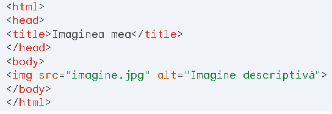
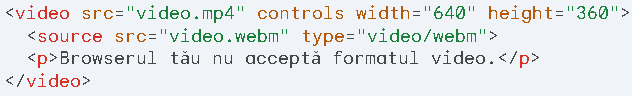
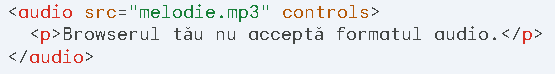

Elemente multimedia HTML
HTML (HyperText Markup Language) permite includerea de conținut
multimedia, cum ar fi imagini, videoclipuri și sunet, în paginile web.
Deși HTML nu are capacități multimedia native, oferă elemente specifice
care permit integrarea acestor tipuri de conținut cu ajutorul unor fișiere
externe sau al unor playere integrate.
Elemente multimedia comune în HTML:
-
Imagini: Elementul <img> este utilizat pentru a include o
imagine.
-
Videoclipuri: Elementul <video> permite integrarea unui
videoclip.
-
Audio: Elementul <audio> este utilizat pentru a include un
fișier audio.
-
Obiect: Elementul <object> oferă o modalitate mai generică
de a integra conținut multimedia.
Atribute importante:
- src: Specifică calea către fișierul multimedia.
-
alt: Definește un text alternativ pentru conținutul
multimedia.
-
width și height: Definiți lățimea și înălțimea elementului
multimedia.
-
controls: Adaugă controale de redare pentru videoclipuri și
audio.
-
autoplay: Redă automat conținutul la încărcarea paginii.
-
loop: Repetă redarea conținutului multimedia la finalizare.
Exemple de utilizare:
Includerea unei imagini:

Integrarea unui videoclip:

Redarea unui fișier audio:

Considerații suplimentare
-
Formate multimedia: Asigurați-vă că utilizați formate compatibile
cu browserele moderne.
-
Accesibilitate: Oferiți text alternativ și descrieri detaliate
pentru a face pagina dvs. web accesibilă.
-
Experiența utilizatorului: Testați elementele multimedia pe
diferite dispozitive și conexiuni.
-
Performanță: Optimizați dimensiunea fișierelor multimedia pentru
a reduce timpii de încărcare.